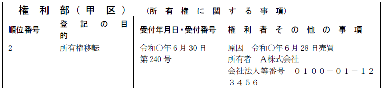
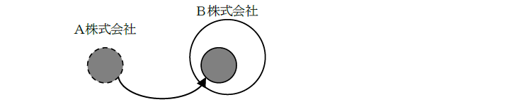
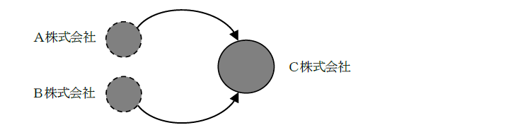
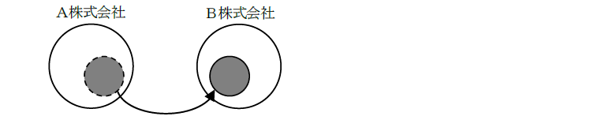
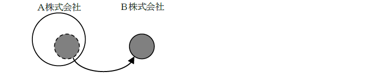
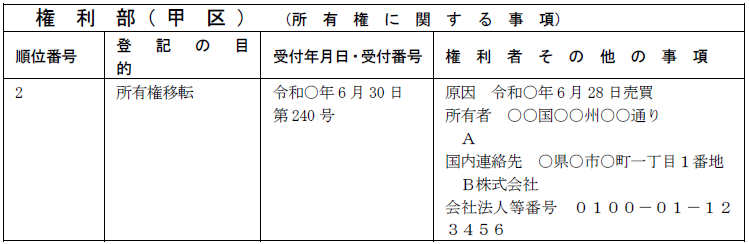
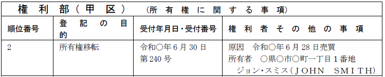
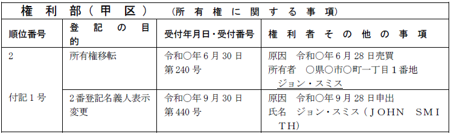
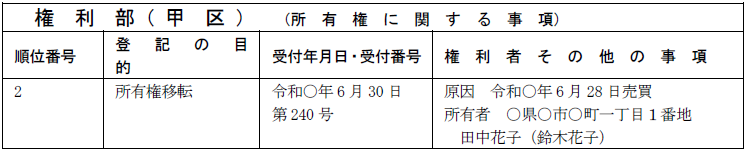
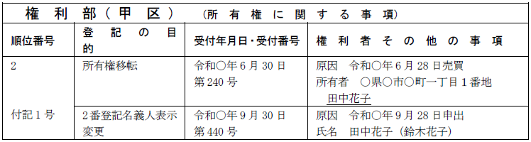

第１編 各 論
第１章 所有権の登記
第２節 所有権移転の登記
Ⅳ 会社の登記
1. 意義
法人が登記申請をする場合には、その法人の代表者が法人を代表して登記申請をする（司法書士に依頼する場合には、法人の代表者が法人を代表して司法書士に委任する）。
この場合に、その代表者が本当に登記申請をすることができる代表権のある者であるかを証明する必要があるため、会社法人等番号を有する法人にあっては、当該法人の会社法人等番号、それ以外の法人にあっては、当該法人の代表者の資格を証する情報の提供が要求される（不登令7条1項1号）。
(1) 原則
申請人が法人であるときは、当該法人の会社法人等番号等を提供しなければならない。
なお、Ａ合名会社の代表社員がＢ株式会社であり、当該Ｂ株式会社の職務執行者としてＣが選任されている場合において、Ａ合名会社を申請人とする所有権の移転の登記を申請するときは、Ａ合名会社の会社法人等番号を提供すれば足り、Ｂ株式会社の会社法人等番号の提供は要しない（登研731Ｐ.173）。
(2) 例外
①当該法人の代表者が資格を証する登記事項証明書（作成後3か月以内）を提供して登記を申請する場合（不登令7条1項1号括弧書、不登規36条1項1号）
②不動産に関する国の機関の所管に属する権利について命令又は規則により指定された官庁又は公署の職員が登記の嘱託をする場合（不登令7条2項）
→ 命令又は規則によって指定された官庁又は公署の職員であるため、その確認が登記官にとって容易であるからである。
2. 会社法人等番号の提供により省略できる添付情報
①住所証明情報（不登令9条、不登規36条4項）
②登記事項証明書（平27.10.23民2.512）
③印鑑証明書（不登規48条1号、49条2項1号）
④法人の名称変更等を証する変更証明情報（不登令9条、平27.10.23民二512）
⑤法人の合併による承継を証する情報（不登令7条1項5号イ、平27.10.23民二512）
所有権の登記名義人が法人であるときは、法人識別事項が登記事項となる（不登法73条の2第1項第1号）。会社法人等番号は変更されることがなく、法人を特定するのに有用であることから規定されたものである。
1. 法人識別事項（不登規156条の2）
(1) 会社法人等番号を有する法人
当該法人の会社法人等番号
「会社法人等番号 0100-01-123456」のように記載する（令6.3.22民二.551）。
(2) 会社法人等番号を有しない法人であって、外国の法令に準拠して設立されたもの
当該外国の名称
「設立準拠法国 ○○」のように記載する（令6.3.22民二.551）。
(3) 上記(1)・(2)のいずれにも該当しない法人
当該法人の設立の根拠法の名称
「設立根拠法 ○○法」のように記載する（令6.3.22民二.551）。
2. 法人識別事項を申請情報の内容とする場合
所有権保存、所有権移転、所有権の更正の登記（所有権の登記名義人となる者があるときに限る。）等を申請する場合において、所有権の登記名義人となる者が法人であるときは、法人識別事項を申請情報の内容としなければならない。
所有権の登記名義人の名称又は住所の変更又は更正の登記(法人識別事項が既に登記されているときを除く。)を申請する場合も同様である。
3. 添付情報
上記1. (2)又は (3)を申請情報の内容とする登記を申請する場合には、当該事項を証する情報の提供を要する（不登規156条の3）。
4. 法人識別事項の変更又は更正の登記
法人識別事項の変更又は更正の登記は、所有権の登記名義人が単独で申請することができる（不登規156条の4）。
【法人識別事項の記録例】

合併には、以下の2つの種類がある。
①吸収合併：合併により消滅する会社（消滅会社）の権利義務の全部を合併後存続する会社（存続会社）に承継させることをいう（会社法2条27号）。

②新設合併：合併により消滅する会社（消滅会社）の権利義務の全部を合併により設立する会社（設立会社）に承継させることをいう（会社法2条28号）。

消滅会社が所有していた不動産は、存続会社又は設立会社に当然に承継されることになる。権利義務の全部を承継させるのが、合併だからである。
【申請例43 所有権移転 合併】
事例： 株式会社Ａ（吸収合併消滅会社）が、株式会社Ｂ（吸収合併存続会社）と、令和○年6月28日を効力発生日とする吸収合併をした。吸収合併の商業登記は、令和○年6月30日にされた。土地の課税標準の額は、金1000万円である。なお、株式会社Ｂの会社法人等番号は、1234-56-789012である。
1. 申請情報の内容
(1) 登記原因及びその日付
登記原因は、「合併」と記載し、日付は、吸収合併の場合には効力発生日（吸吸収合併契約で定めた日）、新設合併の場合には会社成立の日（設立登記の申請日）を記載する。
(2) 添付情報
・登記原因証明情報
法人の合併を証する市町村長、登記官その他の公務員が職務上作成した情報を提供する必要がある（不登令別表22添付情報）。具体的には、存続会社又は設立会社の登記事項証明書がこれに当たる。
※会社法人等番号を提供したときは、登記事項証明書の提供に代えることができる（平27.10.23民2.512）。
会社分割には、以下の2つの種類がある。
①吸収分割：株式会社又は合同会社（分割会社）が、その事業に関して有する権利義務の全部又は一部を分割後、他の会社（吸収分割承継会社）に承継させることをいう（会社法2条29号）。

②新設分割：株式会社又は合同会社（分割会社）が、その事業に関して有する権利義務の全部又は一部を分割により設立する会社（新設分割設立会社）に承継させることをいう（会社法2条30号）。

分割契約書（吸収分割の場合）又は分割計画書（新設分割の場合）に、分割会社が所有している不動産を承継会社又は設立会社が承継する旨の定めがあれば、当該不動産につき所有権移転の登記をすることになる。
【申請例44 所有権移転 会社分割】
事例： 株式会社Ａ（吸収分割会社、代表取締役Ｃ）が、株式会社Ｂ（吸収分割承継会社、代表取締役Ｄ）に、令和○年6月28日を効力発生日とする吸収分割をした。当該吸収分割契約書には、甲土地の所有権が株式会社Ａから株式会社Ｂに承継される旨の記載がある。土地の課税標準の額は、金1000万円である。
なお、株式会社Ａの会社法人等番号は1234-66-012345、株式会社Ｂの会社法人等番号は1234-56-789012である。
1. 申請情報の内容
(1) 登記原因及びその日付
登記原因は、「会社分割」と記載し、日付は、吸収分割の場合には、効力発生日、新設分割の場合には、会社成立の日（設立登記の申請日）を記載する。
(2) 申請人
会社分割を原因とする所有権移転は、合併を原因とする所有権移転の場合と同じく一般承継であるが、その登記は、承継会社又は設立会社を登記権利者、分割会社を登記義務者とする共同申請によって行われる（60条）。
(3) 添付情報
①登記原因証明情報（61条）
新設分割の場合：新設分割の記載がある設立会社の登記事項証明書及び分割計画書
吸収分割の場合：吸収分割の記載がある承継会社の登記事項証明書及び分割契約書（平18.3.29民2.755）
※会社法人等番号を提供したときは、登記事項証明書の提供に代えることができる（平27.10.23民2.512）。
②登記識別情報（22条本文）
登記義務者（分割会社）が所有権を取得した際の登記識別情報
③印鑑証明書（不登令16条2項、18条2項）
登記義務者である分割会社の代表者の印鑑証明書を提供するのが原則だが、会社法人等番号を提供し、申請情報の内容とした場合には、印鑑証明書の提供を要しない（不登規48条1号、49条2項1号）。
会社法人等番号を申請情報の内容とするときは、添付情報の表示として「印鑑証明書（会社法人等番号○番）」の例により記載する（令2.3.30民二318）。
2. 登記申請の可否
・清算会社が清算中に不動産を処分したが、所有権移転登記をしない間に清算結了の登記がされた場合には、元清算人は、清算会社を代表して、当該所有権の移転登記を申請することができるか？
→ できる（昭28.3.16民甲383参照）。
なお、解散した株式会社の清算人が会社を代表して会社所有の不動産につき売買を原因として所有権移転の登記を申請することは、職務の範囲内の行為であるため、清算人は裁判所の関与なく当然に職務の執行として当該申請を行うことができる。
Ⅴ 所有権の登記のその他の登記事項
所有権の登記名義人が国内に住所を有しないときは、その国内における連絡先となる者の氏名又は名称等（国内連絡先事項）が登記事項となる（不登法73条の2第1項第2号）。
1. 国内連絡先事項（不登規156条の5）
(1) 所有権の登記名義人の国内連絡先となる者があるとき
ⅰ 国内連絡先となる者（1人に限る。）の氏名又は名称並びに国内の住所又は国内の営業所、事務所その他これらに準ずるものの所在地及び名称
ⅱ 国内連絡先となる者が会社法人等番号を有する法人であるときは、当該法人の会社法人等番号
「国内連絡先 ○市○町○丁目○番地 ○○株式会社
会社法人等番号 ○○…」のように記載する（令6.3.22民二.551）。
(2) 国内連絡先となる者がないときは、その旨
「国内連絡先 なし」と記載する（令6.3.22民二.551）。
2. 国内連絡先を申請情報の内容とする場合
所有権保存、所有権移転、所有権の更正の登記（所有権の登記名義人となる者があるときに限る。）を申請する場合において、所有権の登記名義人となる者が国内に住所を有しないときは、国内連絡先事項を申請情報の内容としなければならない。
所有権の登記名義人の名称又は住所の変更又は更正の登記(国内連絡先事項が既に登記されているときを除く。)を申請する場合も同様である。
3. 添付情報
①国内連絡先事項証明情報
国内連絡先となる者の氏名等を証する情報
②国内連絡先承諾書
国内連絡先となる者の承諾を証する当該国内連絡先となる者が作成した情報
・（上記1.(2)の場合）国内連絡先となる者がない旨を証する情報
4. 国内連絡先事項の変更又は更正の登記
国内連絡先事項の変更又は更正の登記は、所有権の登記名義人が単独で申請することができる（不登規156条の7第1項）。
登記原因及びその日付は以下のようになる（令6.3.22民二.551）。
・国内連絡先事項の変更（国内連絡先となる者に変更はなく住所等のみを変更する場合を含む。）：「年月日国内連絡先変更」
・国内連絡先事項が登記されておらず、新たに登記をする場合
：「年月日国内連絡先設定」
・国内連絡先事項の更正：「錯誤」
国内連絡先となる者に変更又は更正はないが、当該者の住所等のみを変更又は更正する登記は、国内連絡先となる者として登記されている者も単独で申請することができる（不登規156条の8第1項、令6.3.22民二.551）。この場合、「所有権の登記名義人の承諾を証する当該所有権の登記名義人が作成した情報」の提供を要する（不登規156条の8第2項）。
【国内連絡先の記録例】

5. 国内連絡先事項の職権抹消
登記官は、国内連絡先事項が登記されている所有権の登記名義人の住所についての変更の登記又は更正の登記をする場合において、変更後又は更正後の住所が国内にあるときは、当該国内連絡先事項を抹消する記号を記録しなければならない（不登規156条の9）。
1. ローマ字氏名併記の申出
(1) 登記申請に伴うローマ字氏名併記の申出
所有権保存、所有権移転、所有権の更正の登記（所有権の登記名義人となる者があるときに限る。）等を申請する場合において、所有権の登記名義人となる者が日本の国籍を有しない者であるときは、当該登記の申請人は、登記官に対し、当該申請人の氏名の表音をローマ字で表示したもの（「ローマ字氏名」という。）を申請情報の内容として、当該ローマ字氏名を登記記録に記録するよう申し出るものとする（不登規158条の31第1項第1号）。
所有権の登記名義人の氏名の変更又は更正の登記を申請する場合も同様である（不登規158条の31第1項第2号）。
(2) 登記申請を伴わないローマ字氏名併記の申出
日本の国籍を有しない所有権の登記名義人は、登記官に対し、そのローマ字氏名を登記記録に記録するよう申し出ることができる（当該ローマ字氏名が既に記録されているときを除く）（不登規158条の32第1項）。
2. 対象
外国人である所有権の登記名義人（自然人）が対象であり、所有権の登記名義人以外の者の氏名に併記することはできない（令6.3.22民二.552）。
氏名が漢字表記の外国人も対象となる。
3. 申出の方法
(1) 登記申請に伴うローマ字氏名併記の申出
申請情報である登記権利者（申請人）の氏名に括弧を付してローマ字氏名を併記する方法による（令6.3.22民二.552）。この場合、「ローマ字氏名を証する情報」を申請情報と併せて提供しなければならない（不登規158条の31第2項）。住民票の写し等がこれにあたる。
(2) 登記申請を伴わないローマ字氏名併記の申出
次に掲げる事項を明らかにしてしなければならない（不登規158条の32第2項、第3項）。
ⅰ 申出人の氏名及び住所
ⅱ 代理人によって申出をするときは、当該代理人の氏名又は名称及び住所並びに代理人が法人であるときはその代表者の氏名
ⅲ 申出の目的
「○番所有権登記名義人表示変更」のように記載する。
ⅳ 所有権の登記名義人の氏名
ⅴ 所有権の登記名義人のローマ字氏名
ⅳ・ⅴは「変更後の事項 氏名 ジョン・スミス（ＪＯＨＮ ＳＭＩＴＨ）」のように記載する。
ⅵ 申出に係る不動産の不動産所在事項又は不動産番号
ローマ字氏名併記の申出は、書面ですること（書面申出）も、オンラインですること（電子申出）もできる（不登規158条の32第5項）。
4. 添付情報
(1) 登記申請に伴うローマ字氏名併記の申出
・ローマ字氏名証明情報
当該ローマ字氏名を証する市町村長その他の公務員が職務上作成した情報（公務員が職務上作成した情報がない場合にあっては、これに代わるべき情報）（不登規158条の31第2項）
住民票の写し、旅券の写しであって一定の要件を満たすもの等がこれにあたる。
(2) 登記申請を伴わないローマ字氏名併記の申出
①代理権限証明情報
代理人によって申出をするときに提供する（不登規158条の32第7項第1号）。
②ローマ字氏名証明情報
ローマ字氏名を証する市町村長その他の公務員が職務上作成した情報（公務員が職務上作成した情報がない場合にあっては、これに代わるべき情報）（不登規158条の32第7項第2号）
【所有権移転登記と同時にローマ字併記の申出をした場合の記録例】

※ローマ字氏名は大文字で表示し、氏と名の間にはスペースを付す。
【登記申請を伴わずにローマ字併記の申出をした場合の記録例】

※共有者の一人についてローマ字氏名併記の申出をした場合、氏名部分は「共有者ジョン・スミスの氏名 ジョン・スミス（ＪＯＨＮ ＳＭＩＴＨ）」となる。
1. 旧氏併記の申出
(1) 登記申請に伴う旧氏併記の申出
所有権保存、所有権移転、所有権の更正の登記（所有権の登記名義人となる者があるときに限る。）等を申請する場合において、所有権の登記名義人となる者は、その一の旧氏を申請情報の内容として、当該旧氏を登記記録に記録するよう申し出ることができる（不登規158条の34第1項第1号）。
所有権の登記名義人の氏名の変更又は更正の登記を申請する場合も同様である（不登規158条の34第1項第2号）。この場合において、当該登記記録に同号に定める者の旧氏が記録されているときは、当該申出に係る旧氏は、当該登記記録に記録されている旧氏又は当該旧氏より後に称していた旧氏でなければならない（不登規158条の34第2項、158条の35第2項）。
(2) 登記申請を伴わない旧氏併記の申出
所有権の登記名義人は、登記官に対し、登記官に対し、その一の旧氏を登記記録に記録するよう申し出ることができる（不登規158条の35第1項）。
※上記(1)・(2)のいずれの場合も、当該旧氏が登記すべき氏と同一であるときは、申出は認められない（不登規158条の34第1項ただし書、158条の35第1項ただし書）。
2. 申出の方法
旧氏併記の申出は、書面ですることも、オンラインですることもできる（不登規158条の35第6項）。
旧氏併記の申出で明らかにしなければならない事項は、上記２3.(2)と基本的に同じであるが、ローマ字氏名ではなく、「所有権の登記名義人について記録すべき旧氏」を明らかにする点が異なる（不登規158条の35第3項）。所有権の登記名義人の氏名及び記録すべき旧氏は、「変更後の事項 氏名 田中花子（鈴木花子）」のように記載する（令6.3.27民二.553）。
3. 添付情報
(1) 登記申請に伴う旧氏併記の申出
・旧氏を証する情報
当該旧氏を証する市町村長その他の公務員が職務上作成した情報（不登規158条の34第3項）
具体的には、所有権の登記名義人となる者の戸籍謄本等を提供する。
※添付省略できる場合
ⅰ 新たに所有権の登記名義人が記録される登記の申請に伴い申出をする場合は、所有権の登記名義人となる者の住所を証する情報に申出に係る旧氏が記録されているときは、これをもって旧氏を証する情報を兼ねることができる（令6.3.27民二.553）。
この場合の添付情報の表示は次のようにして、住所を証する情報が旧氏を証する情報を兼ねる旨を明らかにしなければならない（令6.3.27民二.553）。
ⅱ 氏の変更の登記の申請に伴い申出をする場合であって、次のいずれかに該当する場合には、旧氏を証する情報の添付を省略し、又はこれをもって旧氏を証する情報を兼ねることができる（令6.3.27民二.553）。これらの場合の添付情報の表示も上記ⅰの例と同様である。
①申出に係る旧氏が申出に係る不動産の登記記録に記録され、又は記録されていた旧氏と同一である場合
②申出に係る旧氏が変更後の氏を証する登記原因証明情報（市区町村長が作成したものに限る。）に記録されている旧氏と同一である場合
ⅲ 旧氏が既に登記されている所有権の登記名義人が他の共有者の持分を取得することに係る所有権の移転の登記を申請する場合において、当該旧氏を申請情報の内容としたときは、旧氏を証する情報の提供を省略することができる（令6.3.27民二.553）。この場合の添付情報の表示も上記ⅰの例と同様である。
(2) 登記申請を伴わない旧氏併記の申出
①代理権限証明情報
代理人によって申出をするときに提供する（不登規158条の35第8項第1号）。
②旧氏を証する情報
所有権の登記名義人について記録すべき旧氏を証する市町村長その他の公務員が職務上作成した情報（不登規158条の35第8項第2号）
具体的には、所有権の登記名義人の戸籍謄本等を提供する。
4. 登記記録への記録方法
登記官は、旧氏併記の申出があったときは、職権で、当該申出に係る旧氏を登記記録に記録する（不登規158条の34第5項）。
【所有権移転登記と同時に旧氏併記の申出をした場合の記録例】

【登記申請を伴わずに旧氏併記の申出をした場合の記録例】

※共有者の一人について旧氏併記の申出をした場合、氏名部分は「共有者田中花子の氏名 田中花子（鈴木花子）」となる。
5. 旧氏の記録を希望しない旨の申出
登記記録に旧氏が記録されている所有権の登記名義人は、登記官に対し、当該旧氏の記録を希望しない旨を申し出ることができる（不登規158条の36第1項）。